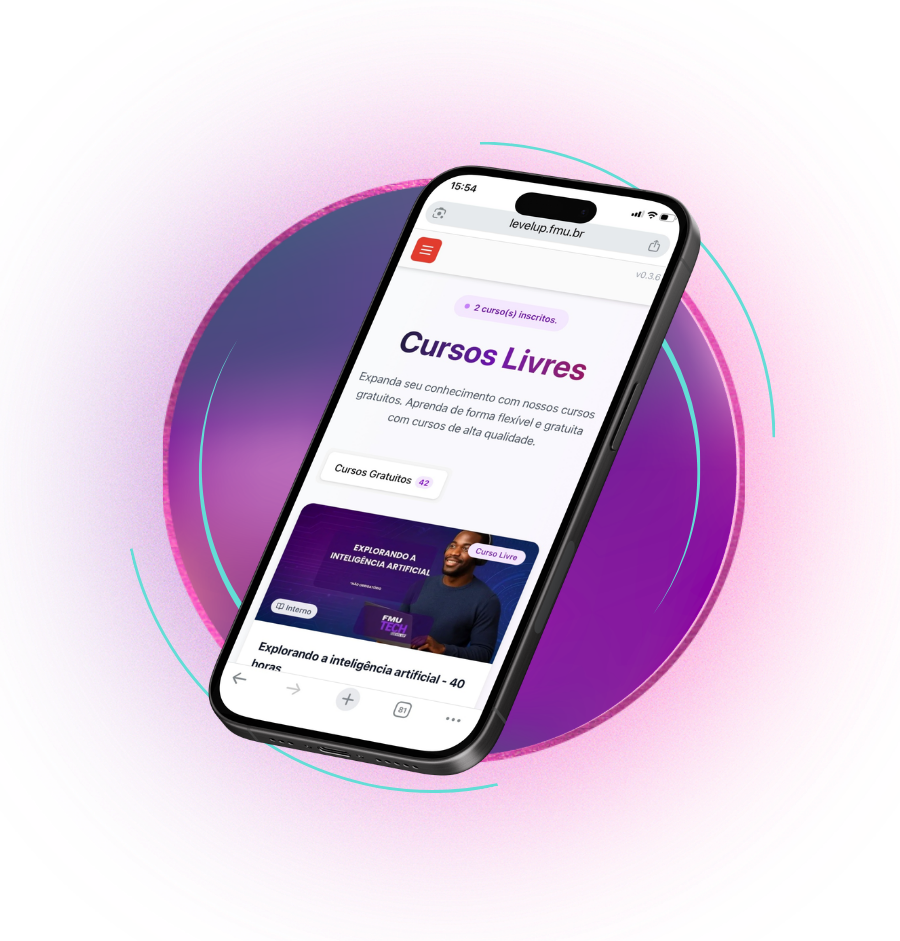

Assista as aulas e realize a atividade no seu tempo.
Transforme seu conhecimento em conteúdo
E seu conteúdo em oportunidades
Você já imaginou usar as redes sociais para fortalecer sua carreira, compartilhar suas ideias, criar conexões e se destacar no mercado?
O curso Creator Academy foi desenvolvido pela FMU | FIAM-FAAM em parceria com a PlayNest, é uma jornada de aprendizagem criada para preparar estudantes para o mercado digital, desenvolvendo competências em produção de conteúdo, comunicação, marca pessoal e criatividade.
Quero fazer parte, inscreva-se no curso Creator AcademyAprendizagem flexível100%
onlineCertificado
Tudo o que você precisa saber antes de começar
Acompanhe os conteúdos e desafios de onde estiver, no seu ritmo.
FMU | FIAM-FAAM
Após a conclusão do curso, seu certificado é emitido automaticamente.
Retome os conteúdos sempre que precisar revisar ou aplicar uma técnica.
O Mercado Mudou
O profissional do futuro também é um criador
Hoje, independentemente da profissão, quem sabe comunicar suas ideias conquista mais espaço
O mundo digital deixou de ser uma tendência e passou a fazer parte do mercado de trabalho
Gestores compartilham experiências e conhecimentos.
Advogados produzem conteúdo educativo.
Nutricionistas promovem saúde e bem-estar.
Empreendedores expõem seu trabalho.
Professores compartilham ideias e dinâmicas.
Profissionais constroem sua identidade pessoal.
O que é a Creator Academy?
Uma jornada para formar os criadores do futuro
Ao longo da jornada, você aprenderá a utilizar as principais plataformas digitais para compartilhar conhecimento, fortalecer sua marca pessoal e criar conteúdos relevantes para diferentes públicos.
Muito mais do que aprender a gravar vídeos, você desenvolverá competências essenciais para comunicar ideias, utilizar tecnologias digitais e construir uma presença profissional consistente.
Criar conteúdo vai muito além de gravar vídeos: é saber comunicar, inspirar e gerar impacto.
FMU | FIAM-FAAM + PlayNest
Entenda a parceria
O curso Creator Academy nasce da união entre a tradição acadêmica da FMU | FIAM-FAAM e a experiência da PlayNest no universo das redes sociais impulsionando criadores de conteúdo.
Essa parceria aproxima você das tendências do mercado, apresentando: metodologias, ferramentas e estratégias utilizadas por profissionais que atuam diariamente na criação de conteúdo digital.
Você aprenderá com uma abordagem prática, atual e alinhada a trabalhabilidade.

Aprenda com especialistas
Uma equipe que combina experiência acadêmica, prática de mercado e vivência na criação de conteúdos
JP Paes Leme
CO-Fundador e CEO da Play9
Influenciadores são como novas emissoras?
Raíssa Couto
Pesquisa e Inovação da Play9
Mitos e Verdades sobre análise de dados.
Luiza Andrade
Coordenadora de Conteúdo da Play9
Conteúdos criativos podem estar mais acessíveis do que você imagina.
Por que aprender a criar conteúdo?
Porque criar conteúdo é desenvolver competências que serão úteis em qualquer profissão
Planejamento
Definir objetivos, o público e o formato antes de produzir.
Criatividade
Apresentar ideias de maneira interessante e original.
Consistência
Manter a frequência, qualidade e coerência na comunicação.
Gestão de tempo
Organizar etapas e prioridades.
Análise de resultados
Observar o alcance, participação e retorno do público.
Autonomia
Tomar decisões e conduzir a produção com responsabilidade.
O que você vai aprender
Planejamento de Conteúdo
- Definição de nicho
- Público-alvo
- Estratégia de conteúdo
Storytelling
- Técnicas de narrativa
- Comunicação que gera conexão
- Como prender a atenção
- Construção de mensagens memoráveis
Produção Audiovisual
- Gravação com smartphone
- Enquadramento
- Iluminação
- Captação de áudio
- Cenários
Edição
- Ferramentas de edição
- Cortes rápidos
- Legendas
- Efeitos
- Publicação
Plataformas Digitais
- TikTok
- YouTube
Crescimento Digital
- Engajamento
- Métricas
- Comunidade
- Estratégias de crescimento
Aprenda Fazendo
Conhecimento que vira prática
No curso Creator Academy, você aprende colocando a mão na massa. Ao longo da jornada, será desafiado a criar conteúdos reais, aplicando na prática técnicas de planejamento, produção e comunicação digital.
Cada módulo foi desenvolvido para fortalecer sua criatividade, desenvolver sua marca pessoal e ampliar sua confiança na criação de conteúdos relevantes para diferentes plataformas.
O curso é voltado para estudantes que desejam fortalecer sua presença digital, produzir conteúdo com qualidade, utilizar as redes sociais de forma estratégica, aprimorar sua comunicação, construir um portfólio digital e ampliar suas oportunidades profissionais, seja para empreender, compartilhar conhecimento ou se destacar em sua área de atuação.
Porque, independentemente da profissão, saber comunicar ideias é uma competência cada vez mais valorizada pelo mercado.
Sua jornada em 7 passos
Da descoberta do seu posicionamento à construção de uma presença digital consistente
1
Descubra seu potencial
2
Aprenda com especialistas
3
Desenvolva habilidades
4
Produza conteúdos reais
5
Fortaleça sua marca
6
Amplie sua presença
7
Gere oportunidades
Experiência interativa
Descubra seu perfil criador
Responda quarto perguntas rápidas e descubra que tipo de criador você poderá se tornar
Vagas Limitadas
Inscrições abertas para alunos FMU | FIAM-FAAM
Você poderá se inscrever no curso somente se for aluno FMU| FIAM–FAAM (Graduação ou Pós-Graduação). O curso é gratuito e com certificação. Abaixo você encontra o passo a passo de como se inscrever.
Comece Hoje
Construa sua presença digital com estratégia, prática e acompanhamento
Inscrições abertas por tempo limitado, conforme disponibilidade da turma.
Perguntas frequentes
Encontre rapidamente as principais informações para começar sua jornada na Creator Academy.
Quem pode participar?
O Creator Academy é gratuito e exclusivo para estudantes FMU | FIAM-FAAM.
Esse curso vale como horas complementares?
Sim, o curso Creator Academy vale 10 horas complementares.
Preciso ter experiência com criação de conteúdo?
Não. A trilha foi pensada também para quem está começando e deseja desenvolver habilidades de forma prática.
As horas complementares são computadas automaticamente?
Não, após você baixar o certificado faça o caminho: Secretaria > Secretaria Virtual > Serviços > Nova Solicitação > Adicionar Serviço > Comprovação de Atividade Acadêmica Complementar.
O conteúdo fica disponível após a conclusão?
Sim, enquanto você for aluno FMU| FIAM – FAAM, você poderá revistar o conteúdo mesmo depois de concluído.
O futuro pertence a quem sabe se comunicar
O conhecimento continua sendo essencial. Mas saber compartilhar esse conhecimento tornou-se um diferencial.
O curso Creator Academy foi criada para ajudar você a desenvolver competências que acompanharão toda a sua trajetória profissional.
Porque o profissional do futuro não apenas domina sua área de atuação. Ele também sabe comunicar, criar, conectar e inspirar.